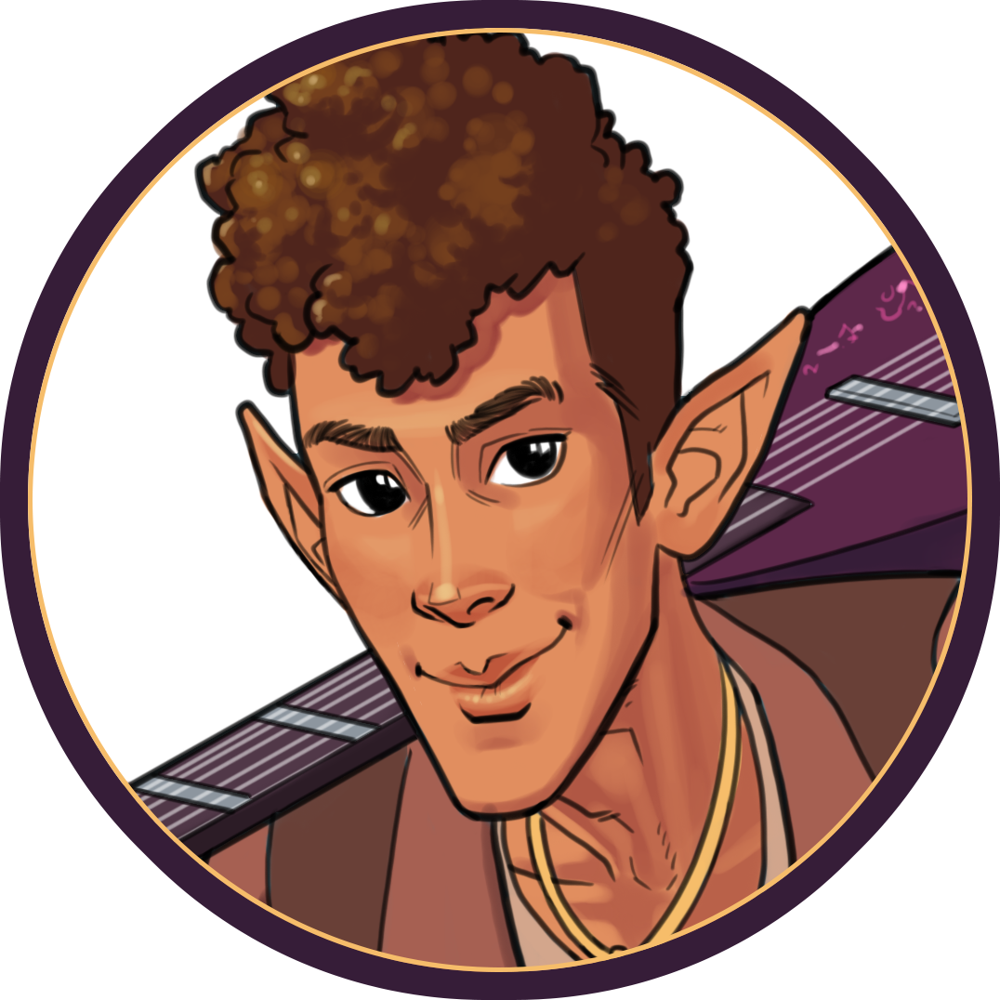
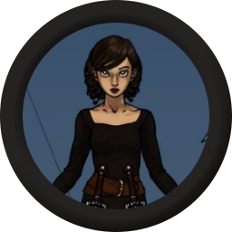
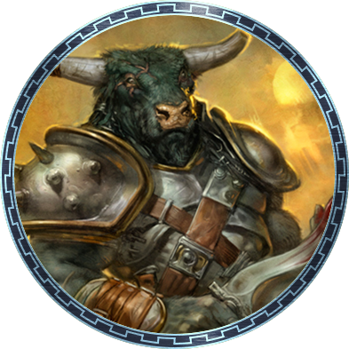
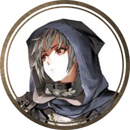
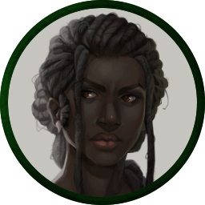
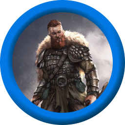

PLAYER CHARACTERS
Hover over images for a closer look!
| Name | Species | Class | Status | Token | Notes |
|---|---|---|---|---|---|
| Kieran Bradford | Half-Elf | Bard | Active |  |
Son of the wealthy Silvyr Bryceran, Kieran dedicated his life to the mission of separating himself from Silvyr's influence. When Kieran isn't adventuring, he plays music at the Tipsy Schooner. |
| Ariadne Drake | Human | Rogue | Active |  |
A teenage shoplifter turned master burglar, Ariadne Drake uses an alias for her real name, Ana Day. Ariadne always has something to prove, and does everything she can to impress the leaders of the Defiance! |
| Acroatis of Drepolis | Minotaur | Fighter | Active |  |
A soldier from faraway Drepolis, Acroatis is the picture of discipline and training. He is known as Acroatis the Listener because he was raised by a famous poet and remembers every story verbatim. |
| Levin Branco | Aasimar | Cleric | Active |  |
A part-angel military school dropout, Levin is the local mortician of New Solstice. Encouraged by her connection to her god, Leon, and vexed by her terror of frogs and reptiles, Levin protects the city. |
| Handa Y'Niri | Yuan-Ti | Ranger | Retired |  |
A local crab fisherwoman, Handa Y'Niri has a not-so-secret secret- she's a snake woman: a Yuan-Ti. With nerves of steel, she focuses on the mission at hand without any pesky emotions. |
| Caldur Sigurdson | Human | Barbarian | Ship Captain |  |
A bombastic drunkard, Caldur is the captain of the party's ship in his retirement. Worshipping the four-faced god Attir, who mandates different behavior depending on chance, makes Caldur a wildcard during any adventure! |